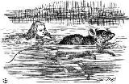

Just then she heard something splashing about in the pool a little way off, and she swam nearer to make out what it was: at first she thought it must be a walrus or hippopotamus, but then she remembered how small she was now, and she soon made out that it was only a mouse that had slipped in like herself.
`Would it be of any use, now,' thought Alice, `to speak to this mouse? Everything is so out-of-the-way down here, that I should think very likely it can talk: at any rate, there's no harm in trying.' So she began: `O Mouse, do you know the way out of this pool? I am very tired of swimming about here, O Mouse!' (Alice thought this must be the right way of speaking to a mouse: she had never done such a thing before, but she remembered having seen in her brother's Latin Grammar, `A mouse--of a mouse--to a mouse--a mouse--O mouse!' The Mouse looked at her rather inquisitively, and seemed to her to wink with one of its little eyes, but it said nothing.
It was high time to go, for the pool was getting quite crowded with the birds and animals that had fallen into it: there were a Duck and a Dodo, a Lory and an Eaglet, and several other curious creatures. Alice led the way, and the whole party swam to the shore.